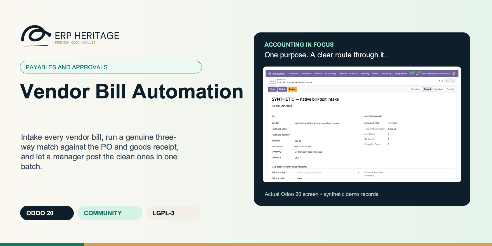
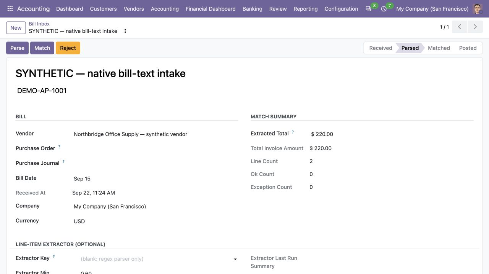
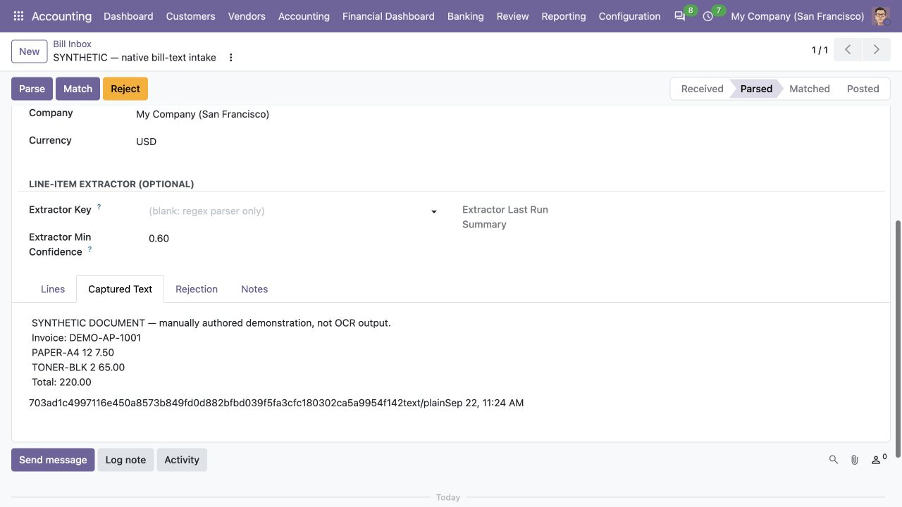
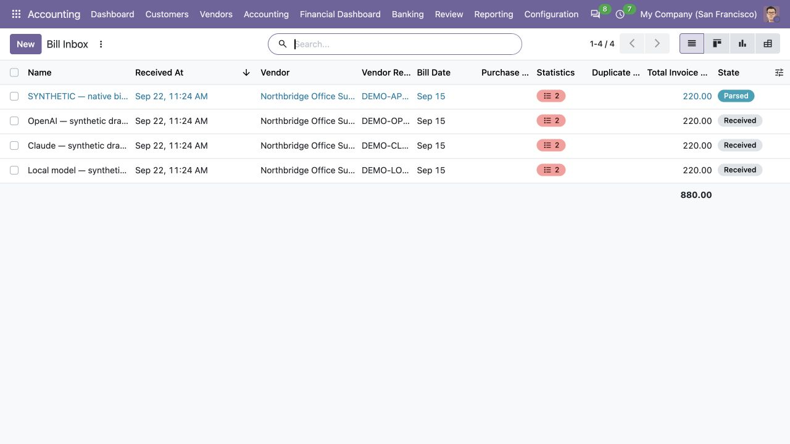

ERP HERITAGE / ODOO 20 COMMUNITY
Intake every vendor bill, run a genuine three-way match against the PO and goods receipt, and let a manager post the clean ones in one batch.
LGPL-3 · Odoo 20 · v20.0.1.4.8 · Module guide, setup, workflows and rollout checks
The purpose
A vendor bill intake pipeline that takes routine bills off the manual key-in queue while keeping every posting under human control.
Inside Odoo 20
Captured from Odoo 20 Community using synthetic demonstration records. Configuration screens show the available workflow; external service connectivity still requires the relevant provider setup and validation.

Native bill-text intake after parsing a manually authored example, with two lines and a 220.00 total. No OCR extraction is represented.
Captured 2026-09-22 from isolated Odoo 20 Community using manually authored synthetic bill text and the actual native text parser. No OCR provider, image extraction or external service was called.

Captured-text tab retains the manually authored synthetic input used by the native parser; the selected extractor is blank.
Captured 2026-09-22 from isolated Odoo 20 Community using manually authored synthetic bill text and the actual native text parser. No OCR provider, image extraction or external service was called.

Bill Inbox distinguishes the parsed native-text example from three provider demonstration drafts that remain Received and have not run extraction.
Captured 2026-09-22 from isolated Odoo 20 Community. Only the native text example was parsed; OpenAI, Claude and local-model drafts contain manually entered values. No provider request or OCR confidence result is represented.
Inside this module
Not field names that sound like a match. Each line is matched to its PO line, the received quantity is read from done stock moves, and price is compared in the bill currency after FX conversion. Over-receipt is flagged distinctly from a quantity mismatch.
Matched-within-tolerance intakes are flagged ready to post; an accounting manager posts them, alone or as a selected batch, in one action. Posting is never automatic, and it re-checks duplicates at post time.
LGPL-3 source on disk. The shipped regex parser makes no remote calls. The extractor interface is pluggable, so a partner OCR or line extractor can register without forking the suite. Free today, free at renewal, because there is no renewal.
A bill raised in a different currency than the PO does not flag every line as a price exception. The PO unit price is converted into the bill currency at the bill date before the price-tolerance check runs.
A price line is only flagged when both the per-unit percent tolerance and the absolute line-amount tolerance are breached, so a trivial penny mismatch never blocks an otherwise clean bill from posting.
Invoiced quantity that exceeds the ordered PO quantity beyond the over-receipt percent is flagged distinctly as over-received, separate from a quantity-versus-received shortfall, so the two cases are never conflated.
A duplicate block can only be cleared by an accounting manager with a written reason, the override is posted to chatter, and posting re-runs the duplicate check at post time, not only at match time.
When more than one partner matches the sender address, the intake is created with no vendor rather than guessing, because a wrong vendor attribution on a bill is higher risk than the convenience of an auto-fill.
From input to outcome
Configure vendor-specific extraction and intake rules using sample documents whose expected values are already known. Gather bill files, vendor extraction patterns, purchase orders, receipts, invoice lines and matching tolerances. Use a representative case with a known expected result so the team can separate configuration decisions from unexpected behaviour. Keep the supporting commercial or accounting evidence available during review.
Prepare the bill from intake and inspect extracted fields, duplicate warnings and the three-way match against purchasing evidence. Follow the record’s available actions in the order intended by the workflow. Review the selected company, relevant dates and any validation messages before continuing. If the source data changes, reassess the result against the updated evidence.
The mail intake drops every incoming bill into the inbox as its own record and resolves each sender to a vendor. The regex parser pulls the vendor reference and total from each. The duplicate detector checks (vendor, reference, total, date) against open intakes and already-posted bills, and flags two that arrived twice and one that posted last week. The three-way match against the open POs surfaces a quantity exception on a fourth bill where the receipt came up short. The bookkeeper resolves the four flagged cases, then the accounting manager selects the clean remainder and posts them in one batch. The duplicates need a manager override with a written reason; everything else just posts.
Resolve quantity, price and receipt exceptions with the buyer or receiving team before the human-controlled posting step. Compare the outcome with the expected treatment for this case and record the reason for any difference that requires follow-up. Give exceptions an owner so they do not disappear inside a period-end spreadsheet.
Treat document extraction as preparation assistance; agree who verifies unreadable or nonstandard files and missing purchasing evidence. Include the accepted operating example, configuration choices and unresolved dependencies in the handover. Review them when business policy, source data or the surrounding Odoo applications change.
Business situations
Vendor Bill Automation is relevant to accounts payable clerks and invoice reviewers who need to answer this question: Which incoming vendor bills can be prepared reliably, and which need a person to resolve discrepancies? Start with the process that creates the decision, identify its owner and agree what evidence the reviewer needs. A narrow pilot helps the team evaluate the supported workflow using its own accounting data before broadening access.
Use the module’s payables and approvals role as one part of a controlled close. Bring the relevant bill files, vendor extraction patterns, purchase orders, receipts, invoice lines and matching tolerances to the review, then explain the result alongside the business event it represents. Establish which outputs become part of the reporting pack and which outstanding matters need a separate accounting decision.
Turn the business question into an acceptance case: Which incoming vendor bills can be prepared reliably, and which need a person to resolve discrepancies? Use one ordinary example and one relevant exception from the supported scope below. Ask the intended operator to prepare it and the reviewer to explain the result. Retain that accepted example with the deployment notes so future changes can be assessed against an understood process.
Before the first result
Confirm that the organisation needs the supported payables and approvals process described here. Identify the responsible accounts payable clerks and invoice reviewers and write down the decision they expect the module to support. Use the limitations section to separate shipped behaviour from an integration, professional judgement or operational service that needs another owner.
Prepare bill files, vendor extraction patterns, purchase orders, receipts, invoice lines and matching tolerances. Check the relevant records in the intended company and use dates that match the business event. Resolve missing accounting configuration before evaluating calculated output; plausible-looking totals do not establish that the chosen inputs or policies are correct.
This module declares Accounting Suite Base as part of its installation foundation. Its direct standard-Odoo dependencies are account, purchase, stock, mail. Review the actual dependency set in the target database before a rollout, especially where another addon also extends the same accounting models, menus or posting actions.
Define who operates Vendor Bill Automation, who reviews unusual results and who maintains configuration. Run the representative workflow below in a test database using the intended users. Confirm that users can reach the work they own and that the reviewer understands the available evidence before moving the process into live operation.
Workflow reference
Bills arrive by email or by upload and land in an intake inbox as real, queryable records, each with its own state machine (received, parsed, matched, posted, exception, rejected) and per-transition audit stamps (who, when) plus standard Odoo chatter. A bill that arrives by email creates an intake row from the message body and resolves the sender to a vendor. If more than one partner matches the sender address, the intake is created with no partner rather than guessing, because a wrong vendor on a bill is worse than a blank one.
A pure-Python regex parser extracts the vendor invoice reference and the total from the raw text. The vendor is set manually or resolved from the sender email; due date and line items are entered manually or supplied by an optional extractor adapter. No remote calls are made by the shipped module.
The core is a genuine three-way match per line. Each intake line is matched to its PO line (by partner and product), the received quantity is read from done stock moves, and quantity and price are checked against the tolerance profile in force. Price comparison is multi-currency aware: the PO unit price is converted into the bill currency at the bill date before the tolerance check, so a bill raised in a different currency than the PO does not flag every line as a price exception. A line is only flagged as a price exception when both the per-unit percent tolerance and the absolute line-amount tolerance are breached, so a penny mismatch never blocks posting. Invoiced quantity over the ordered quantity (beyond the over-receipt percent) is flagged distinctly as over-received, not lumped in with a quantity mismatch.
A default tolerance profile ships as install data and is present in every install; per-partner overrides are configured on the vendor (quantity percent, price percent, absolute amount, optional over-receipt percent).
Duplicate detection runs on (vendor, reference, total, date) against both open intakes and already-posted bills. A block can only be overridden by an accounting manager, requires a non-empty reason, and is written to chatter; posting re-checks for duplicates at post time, not only at match time.
Posting is always a manager action. Intakes that match within tolerance are flagged ready to post, and an accounting manager posts them, individually or as a selected batch, in one action. Posting builds a standard vendor bill (journal entry, vendor bill) carrying the PO and supplier taxes. Exceptions stay queued for review with the deltas surfaced. A scheduled cron (every 15 minutes by default) promotes received intakes through parse and match, with per-record try/except isolation so one bad intake is logged and skipped without stopping the batch. Posting still requires a manager and is never automatic.
Re-running Parse will not clobber manually entered or previously extracted lines. If lines already exist on the intake, the parser returns early and leaves them untouched.
When an extracted line's quantity times unit price diverges from the reported line total by more than a cent, the framework trusts the line total and back-solves the unit price to minimise total drift.
Per-record try/except in the scheduled run means one un-parseable or un-matchable intake is logged and skipped, while the rest of the batch keeps moving.
Per line: PO line by partner and product, received quantity from done stock moves, and price compared in the bill currency. Out-of-tolerance lines route the intake to the exception state with the deltas captured.
Quantity percent, price percent, absolute amount, and optional over-receipt percent. A default profile ships as install data and applies everywhere; vendors carry their own overrides.
Checks (vendor, reference, total, date) against open intakes and posted bills. Override is manager-gated, reason-required, and audited; the check repeats at post time.
An accounting manager posts matched intakes individually or in a selected batch. Posting builds a standard vendor bill carrying the PO and supplier taxes, with full per-transition audit fields and chatter.
Inbound mail creates an intake from the message body and resolves the sender to a vendor. Ambiguous senders are left unattributed rather than guessed.
The shipped regex parser makes no remote calls. A registry lets a partner package register its own OCR or line extractor without forking the suite; the bundled adapters ship as inert stubs.
A cron runs every 15 minutes by default, promoting received intakes through parse and match with per-record try/except, so one bad record never halts the run.
Manager approval of the exact current purchase-control exception. Any change to bill, PO, receipt, or purchase method makes the waiver stale and blocks settlement again.
Full inbound email subject retained as source evidence. The vendor reference is a bounded display value when this is long.
Set when the (vendor, Vendor Reference, total, date) tuple matches an existing intake or posted bill. Posting is blocked until the user resolves the duplicate.
Optional key of a registered line-item extractor (typically an OCR/LLM adapter shipped by a partner package). Leave blank to use only the regex parser. The framework uses the extractor only for line-items; supplier and total still come from the regex header pass.
Taxes applied to this line on the posted vendor bill. Auto-populated from the matched PO line, or from the product's supplier taxes when no PO line is matched. Can be edited manually before posting.
Identifies whether the reviewed taxes came from the PO, product, extractor, or a manual accounting decision. Automatic taxes are discarded and derived again whenever matching is invalidated.
Regular expression with one capture group used to extract the vendor invoice reference from incoming bill text. Falls back to a generic 'Invoice[: #]+([A-Z0-9-]+)' pattern if not set.
Regular expression with one capture group used to extract the total amount from incoming bill text. Falls back to a generic 'Total[: ]+([0-9.,]+)' pattern.
Preserved pre-company-scope AP settings from a shared vendor. They are evidence only and must be reviewed into each intended company rather than applied globally.
If set, this profile applies to partners that do not carry an explicit override. Only one profile per company can be flagged as default.
Allowed absolute delta on the line subtotal in addition to the percentage tolerances. Entered in the profile company currency and converted to the bill currency at the bill date.
Illustrative implementation exercise. A supplier invoice references a purchase order, but the receiving team has recorded only part of the delivery. Inspect the extracted header and lines, then compare the bill with the purchase and receipt evidence under the configured tolerances. A successfully read invoice number does not settle the question of whether the quantity may be billed. Review a duplicate vendor reference as a separate intake exception and include one document that the configured extraction cannot read adequately. Assign the mismatch to the appropriate buyer or receiver before posting. If live OCR is required for the source documents, arrange its separate provider extension and test it with actual files rather than assuming regex preparation covers every scan.
Questions before rollout
It is designed for accounts payable clerks and invoice reviewers. Its central business question is: Which incoming vendor bills can be prepared reliably, and which need a person to resolve discrepancies? The listing describes the shipped operating scope and the decisions that remain with the organisation. Evaluate it against your own records and review process, rather than treating the module name as a promise to cover every scenario in that accounting area.
Have bill files, vendor extraction patterns, purchase orders, receipts, invoice lines and matching tolerances ready, together with the person who owns the related accounting policy. Configure vendor-specific extraction and intake rules using sample documents whose expected values are already known. A known example makes it possible to check the result and resolve configuration questions before the process is repeated across more records or companies.
Resolve quantity, price and receipt exceptions with the buyer or receiving team before the human-controlled posting step. Keep the relevant source evidence with the output and be explicit about company, date and policy choices. The most useful review asks whether the result follows from the business inputs, not only whether the operation completed without a validation message.
It belongs to the payables and approvals family. Its declared custom dependency foundation is Accounting Suite Base. Installing the complete suite also brings other operating and specialist modules; using this focused module should be evaluated against its own dependency list and scope. Optional services still need their own configuration and agreement where applicable.
Posting is never automatic. Matched intakes are flagged ready and a manager posts them; there is no auto-post on match. Treat document extraction as preparation assistance; agree who verifies unreadable or nonstandard files and missing purchasing evidence.
No. Vendor Bill Automation provides the specific records, calculations or workflow described in this listing. The organisation remains responsible for its source information, accounting choices, supporting evidence and review. Where the process uses an estimate, a contract assessment or an external service, appoint the appropriate owner before relying on the output.
Scope and requirements
Posting is never automatic. Matched intakes are flagged ready and a manager posts them; there is no auto-post on match.
The shipped regex parser extracts only the vendor reference and the total from the raw text. Vendor is resolved from the sender email or set manually, and due date and line items are entered by hand or via an optional extractor adapter. The parser records no confidence value.
The bundled Claude, OpenAI and local extractor adapters are inert stubs. They ship no remote dependency and refuse live calls until a paid extension is installed.
Override and transition history is captured via readonly audit fields (who, when, reason) and the standard Odoo chatter. This module ships no separate write or unlink locked log model.
There is no integration with a separate approval module. The only gate on posting is the accounting-manager group check.
There is no batch-payment-specific wiring. Posting creates a standard vendor bill that any AP batch-payment run can select, by virtue of standard posting only. No payment is scheduled on post.
Standards references describe the accounting subject addressed by the module. They do not establish certification, statutory filing acceptance or suitability for every jurisdiction. Your finance team owns its assumptions, accounting policies and review.
Installation scope
Odoo installs the following direct dependencies automatically. Additional dependencies can be brought in by those modules. Related modules in the wider catalogue are optional unless they appear in this dependency chain.
Shared reporting engine for the ERP Heritage Odoo 20 Community accounting suite, providing a reproducible report-execution audit log and a move-version result cache. Append-only audit log of every report render with user, timestamp, the full options snapshot, runtime, and a SHA-256 result hash for XLSX and PDF output, plus a multi-company analytic-aware parameterised SQL builder with no raw user input in SQL, a three-tier User/Manager/read-only Auditor privilege model, and a currency-aware XLSX writer. Odoo 20 Community accounting reporting engine, reproducible financial report audit trail, move-version report cache invalidation, multi-company parameterised SQL builder, append-only audit log, read-only auditor role, SHA-256 report hash compliance, currency-aware XLSX export, analytic-aware journal item aggregation.
Included dependency: eh_account_base. The shared reporting engine under the ERP Heritage accounting modules: an append-only render audit log, precise per-company cache invalidation, and a whitelist-only parameterised SQL builder.
Odoo Community dependency required by this module. Its own dependencies and configuration remain part of the installation scope.
Odoo Community dependency required by this module. Its own dependencies and configuration remain part of the installation scope.
Odoo Community dependency required by this module. Its own dependencies and configuration remain part of the installation scope.
Odoo Community dependency required by this module. Its own dependencies and configuration remain part of the installation scope.
Acceptance guide
The following are recommended rollout checks, not claims of additional built-in features. Apply the checks relevant to this module and retain evidence of your own results.
Select a recent, closed period that your finance team understands well. Keep its approved source documents, ledger totals and existing working papers available. Reproduce that period in a staging database before working on current transactions. A familiar period makes differences visible: you can distinguish an opening balance problem from a configuration choice, a timing difference or a genuine defect. Agree which person owns each discrepancy and what evidence will close it. Successful installation is the starting point; a repeatable business outcome is the acceptance criterion.
Write down the output your team needs from this module: a reviewed transaction, an exported file, a reconciled balance, an approved schedule or an operational queue. Identify who prepares it, who reviews it and who relies on it next. Make the scope concrete with one company, one reporting period and a small representative document set. Include an ordinary case and an exception. This keeps the evaluation focused on the business decision instead of the number of available screens, and gives reviewers a consistent way to compare the new workflow with their current process.
Use the Odoo 20 edition of the module and its dependencies together. The manifest defines what Odoo installs automatically; a feature mentioned elsewhere in the wider product family is not automatically included. Review the dependency guide on this page before enabling the complete suite, especially where your deployment also uses Sales, Purchase, Inventory or website components. Confirm that your hosting arrangement accepts custom server modules and their Python requirements. Keep a copy of the installed module versions with your acceptance record so a later update can be checked against the same baseline.
Check the companies, currencies, fiscal periods, journals, accounts and partner records used by your sample. Confirm that account purposes agree with your chart of accounts and that archived records are not being selected inadvertently. Review company-specific settings while the intended company is active. Where a workflow needs bank details, analytic dimensions, product information or payment terms, validate those inputs with their owner. Clean master data reduces repeated exceptions and makes it easier to investigate the exceptions that remain. Keep the preparation list short enough for someone else to repeat it.
Decide which source establishes the opening position before introducing new transactions. Save the source date, company, currency and supporting reconciliation. If a module maintains a schedule or a working-paper balance alongside the ledger, document how that opening amount should tie to the general ledger. Do not use balancing entries to hide a difference during the pilot. Classify the difference, correct its source and rerun the comparison. The resulting trail is useful both for your internal reviewer and for support if an unexpected calculation needs investigation.
Choose named users for preparation, review and administration. Confirm their practical access by signing in as those users in staging, rather than relying on an administrator's view of the menus. A visible menu does not replace model access or record restrictions, and a hidden menu does not by itself prove that data is protected. For your own acceptance check, verify the specific business operations each role needs. If your organization requires separation of duties, include that policy in the rollout criteria and check the actual workflow against it before granting production access.
Run the sample with the intended company selected, then repeat the relevant navigation and search checks as a user assigned to a different company. Record which company owns each source document and each generated result. For users who work across entities, confirm how their allowed-company selection affects totals and available records. Investigate any cross-company difference before it becomes a month-end problem. Group-level work and company-level work have different scopes; use the appropriate module and document the scope on the review evidence instead of assuming one screen represents both.
Include a company-currency case and, where relevant to the module, a foreign-currency case. Check the date used to select exchange rates and keep the rate source available to the reviewer. Add a transaction near a period boundary so the team can see whether document date, accounting date or another business date drives the result. Test decimal precision with a small amount as well as a large one. Record the expected rounding treatment. These checks turn vague differences in totals into questions that can be resolved against your accounting policy.
Choose one result and follow the available links or record references back to the original business document. Compare its company, partner, amount, currency and dates with the expected source. Where the workflow creates a journal entry, inspect the accounts and balancing lines before relying on an aggregate report. Where it exports a file, compare the file's records with the selected batch. Save a small, intelligible evidence set instead of an indiscriminate screenshot archive. A reviewer should be able to explain what happened without needing the original preparer beside them.
If this module creates or updates accounting entries, separate preparation from the decision to post in your operating procedure. Inspect the proposed outcome, resolve missing configuration and confirm the intended period before using a posting action. If the module does not post entries, identify the equivalent commitment point, such as sending a file or approving a review record. Record who is allowed to make that decision. The page describes the module's supported workflow; your team still needs an operating policy that fits its accounting responsibilities and approval structure.
From pilot to production
Use a deliberately incomplete sample in staging: a missing required setting, an unsuitable date or a source document that is not ready for the next step. Observe the actual message and the record state that remains. Correct the input and repeat the operation. Check that the recovered result agrees with the ordinary successful case. For transactions already committed, use the supported correction or reversal workflow rather than editing database records. Your acceptance record should explain how staff recover from mistakes, because that is part of day-to-day usability, not an unusual administrative task.
Repeat an import, calculation, preparation step or button action only where the documented workflow permits it. Confirm whether the expected behavior is a recalculation, a refusal, a new version or reuse of an existing record. Do not infer universal duplicate prevention from one successful test. Record the behavior of the actual operation your team will use and include it in staff guidance. A small, identifiable sample makes duplicate records easy to spot and avoids creating a misleading acceptance result from a large batch with poorly understood contents.
Where accounting dates are involved, inspect your company's lock settings and the role that can change them. Include one sample dated inside a closed period and one in the open period, then observe the supported behavior with normal finance access. Agree how the team will handle late documents and approved corrections. The goal is a clear route for legitimate work that preserves the reason the period was closed. Record the policy alongside the module's workflow so operators know when to stop and involve the person responsible for the close.
If the module produces reports or exchange files, have the intended recipient inspect a sample. For a finance report, check the filters, company, dates, currency, labels and totals. For a bank or service file, use that recipient's own validation or test process before a production submission. Generating a structurally valid file does not establish acceptance by every provider. Keep the exact sample and any recipient feedback with the rollout record. Where no export is provided, agree which supported screen or linked record serves as the handover evidence.
Identify any step that depends on a separately configured provider, connector, credential or commercial service. Confirm the exact adapter and its requirements before scheduling a live demonstration. Some family modules provide deterministic rules or file preparation without a live external connection; their usefulness should be evaluated on that basis. Test a provider failure in staging only when the adapter offers a safe test route. Make it clear who manages credentials and provider subscriptions, and who should be contacted when an external service is unavailable.
Time the operations your staff will actually repeat, using a dataset that resembles your expected company, date range and document volume. Record the environment and sample size beside the timings. Include navigation, filtering, preparation and review rather than quoting a single best-case page load. This page makes no universal performance promise: network latency, database size, customizations and infrastructure affect results. Use measurements to choose a practical rollout batch size and to identify any operation that needs investigation before more users join the workflow.
Give staff a short exercise that begins with a business situation and ends with a reviewed result. Include the expected amount or state, the navigation route, the point at which a reviewer becomes involved and the supported correction route. Let operators explain why their result is correct. Add only the settings and exceptions relevant to their role. A concise internal playbook built from your own pilot is easier to maintain than a large collection of unannotated screenshots, and it helps new users understand the relationship between this module and the rest of Accounting.
Capture the module version, Odoo version, affected company, operation, exact message and a minimal sequence of steps. Use redacted sample documents when sharing evidence outside your organization. State the expected result and the actual result separately. Include the date filters and role used, because the same record can look different with another scope or set of permissions. Never include passwords, API tokens or private keys in a support message. Good reproduction details allow the problem to be investigated without guessing at your business setup or asking staff to repeat a full close.
Before deploying an update, back up the database and filestore together, and restore that backup into an isolated environment. Apply the module update there, then repeat the key pilot scenarios using the saved acceptance record. Check that existing documents remain readable and that the expected actions and menus still lead to the right workflow. Include one newly created record as well as an older one. Keep a rollback plan appropriate to your deployment and confirm that the backup can be restored before scheduling the production change.
Agree the release criteria before the pilot ends: expected financial results, access boundaries, supported corrections, output acceptance and owner sign-off. List unresolved items with their business impact instead of treating every observation as a blocker or dismissing it as cosmetic. Start production with a manageable scope and a named reviewer. Keep the first cycle's evidence so that later enhancements can be assessed against a concrete baseline. App-store descriptions help you select and understand the module; acceptance in your own configuration establishes whether the workflow is ready for your team.
Connected capabilities
These related modules explain how this workflow connects to the wider accounting process. Only the dependencies declared above are installed automatically. Choose optional additions for a specific business need.
Approval Workflow is the corporate spend control most Community accounting stacks skip: a configurable approval chain that blocks journal entry posting until a defined set of approvers has signed off.
The shared engine that powers the ERP Heritage accounting modules for Odoo 20 Community. It auto-installs as a dependency of any ERP Heritage accounting module, so you do not need to install it by hand.
ERP Heritage Community Accounting Pro installs a fixed collection of 50 direct accounting dependencies. Together with the suite itself and the transitive EH EDI Core foundation, its custom-module closure contains 52 modules. The collection brings reporting, reconciliation, payments, receivables, approvals, specialist accounting, group work and close controls into one Community installation. Its value comes from connecting those processes and their evidence; adoption still requires deliberate company configuration, accounting ownership and review. Australian BAS is available separately and installs the suite as its accounting foundation.
Plan the surrounding workflow
The following playbooks explain adjacent work in named companion modules. They are included here to help you plan the handoff around this module. Each companion is labelled as an installed dependency or an optional addition. These capabilities belong to that named companion, not to the standalone module you are reading about.
Optional companion; requires separate installation
Block journal entry posting until every required approver in an amount-banded, ordered chain has signed off.
The gate sits on the journal entry post pipeline, before sequence numbering and reconciliation fire. Until the chain reaches approved, the move cannot post, and the block names the exact policy, pending group, and step that stopped it. No half-posted, gap-numbered moves slip through.
Two approvers clicking at once cannot both advance a step: an atomic compare-and-set with a stale-step guard lets one win and hands the other a clean retry. Every transition lands on an append-only log whose fields are immutable and whose deletion is refused at the model level.
Per-rule SLA hours compute a due time and an on-track, at-risk, or breached state. An hourly cron posts chatter and queues the shipped email reminder and escalates a breached request exactly once to a configured group, with per-record database savepoints and error isolation so one bad rule cannot stall the batch. The full lifecycle is covered by tests.
The post-time gate runs before upstream posting, so sequence numbering and reconciliation side effects only fire after approval. You never get a half-posted, gap-numbered move that approval later has to unwind.
Two approvers in the same group clicking approve at the same instant cannot both advance the step. A raw SQL compare-and-set with a stale-step guard lets one win and gives the other a clean retry, and the race is covered by a regression test.
Step order is pinned to an explicit sequence column, not the approver group's primary key. Creating or deleting unrelated security groups never silently reorders an in-flight approval chain.
The re-approval threshold has both a percentage and an optional absolute floor, so a large-percentage but tiny-absolute change can be exempted from re-signing while a genuinely material change still rolls the request back to step zero.
Re-approval is enforced on a plain write, not just on edit-and-post. Editing a watched field on a draft move that already had an approved request silently resets the request and posts a chatter note, so the next post attempt blocks.
Review this companion’s own setup and scope before connecting the workflows. Keep the company, reporting date and business document references consistent at the handoff.
Optional companion; requires separate installation
Send and receive Peppol BIS Billing 3.0 invoices on Odoo 20 Community, with a real UBL 2.1 generator, an inbound bill workflow, and pre-flight validation that catches errors before the access point does.
Outbound emits the actual OASIS UBL 2.1 namespaces and the Invoice-2 and CreditNote-2 roots. Inbound is a parser plus a received to parsed to matched to posted state machine that creates the vendor bill. Not field names that sound like Peppol, the actual document mechanisms.
Every payload is checked against the high-frequency Peppol and EN 16931 invariants (mandatory elements, single currency, totals reconciled within 1 cent) before download, and a failure names the rule. Participant identifiers are checksum-validated so an invalid ABN or GLN bounces with a precise message, not a rejection hours later.
LGPL-3 source on disk, no activation key, no phone-home. Transport is bring-your-own through a published adapter contract, and the journal entry payload builder is split into override methods so a localisation can enrich party identification and per-line tax mapping without forking the module.
Shared EN 16931 semantics supply legal buyer, net prices, stable unit codes, booked taxes, rounding, prepayment and payable totals. Peppol adds validated participant identifiers and transport evidence.
Document-currency amounts must agree. A separately declared tax accounting currency is accepted only for its exact top-level TaxTotal; every other mixed-currency amount fails pre-flight.
Inbound bills remain manager-gated. Polling parses but never auto-posts; ambiguous suppliers and unsupported financial adjustments route to explicit exceptions.
Exact submitted UBL bytes, digest, endpoint identity and status are pinned before transport. Duplicate business documents and ambiguous transport outcomes fail closed.
One button on a posted customer invoice or credit note renders a Peppol BIS Billing 3.0 document using the official OASIS UBL 2.1 namespaces and Invoice-2 / CreditNote-2 roots, with UN/ECE rec-20 unit codes in the unitCode attribute.
Review this companion’s own setup and scope before connecting the workflows. Keep the company, reporting date and business document references consistent at the handoff.
Optional companion; requires separate installation
Run one customer-receipt or vendor-payment batch with partial settlement, mixed-currency support on company-currency journals, reviewed recipient banks and an exact pre-post CSV preview.
Posting is atomic. A closed period, invalid payment or reconciliation failure rolls the whole attempt back, leaving every member unposted and the reviewed batch confirmed for correction.
The batch creates and posts standard Odoo payments with only a nullable batch link added. Reconciliation, the vendor ledger, partner follow-ups and reporting already understand the output.
One EH Accounting Manager confirms and freezes the batch. A second, different EH Accounting Manager must post it. This maker-checker separation is intentionally not configurable.
Every member either posts and reconciles successfully or the complete attempt rolls back. The batch remains confirmed when correction is required.
Confirmation freezes payment inputs and the exact CSV rows. Posting refuses changed or malformed approval evidence.
The build wizard refuses source documents outside the batch company and validates the journal, direction and currency.
A source document with a live draft payment claim cannot enter another batch, closing the double-pay and double-collection window.
A posted batch is corrected with verified counter-entries. Original posted cash moves and their audit evidence remain immutable.
Review this companion’s own setup and scope before connecting the workflows. Keep the company, reporting date and business document references consistent at the handoff.
Optional companion; requires separate installation
Versioned credential encryption and canonical EN 16931 financial semantics shared by participating ERP Heritage e-invoicing modules.
Credential encryption and common EN 16931 financial semantics live in one audited dependency. Participating format modules reuse them and add only their jurisdiction or transport evidence.
AES-256-GCM ciphertext carries a format version and key id. Historic keyrings preserve existing data while controlled rotation re-encrypts it under the current key.
Shared adapters carry legal parties, net prices, stable unit codes, booked taxes, totals, and references. Peppol and Factur-X consumers retain their own profile identifiers and serialization rules.
Key identity is authenticated inside ciphertext. Unknown versions and missing historic keys fail closed; controlled rotation preserves associated-data binding.
Tampered, truncated, wrong-key, or non-base64 ciphertext raises a vault error instead of returning corrupt plaintext.
Product invoice lines are mapped; section and note rows are excluded. Legacy rows without a display marker are supported.
Discounted and tax-included prices tie BT-146 to posted line net; booked tax buckets and monetary identities fail closed on unexplained drift.
New ciphertext records a format version and key id; legacy ciphertext remains readable, historic keyrings support rotation, and unresolved keys fail closed.
Review this companion’s own setup and scope before connecting the workflows. Keep the company, reporting date and business document references consistent at the handoff.
ERP Heritage
Start with the workflow, setup and acceptance guide above. For implementation or support, share your Odoo version, module version, business scenario and a redacted example. Keep credentials and personal data out of support messages.
Published by ERP Heritage. Odoo is a trademark of Odoo S.A.; this independently developed application is not an Odoo S.A. product or endorsement.
Package: eh_account_ap_automation · Release: v20.0.1.4.8 · License: LGPL-3.